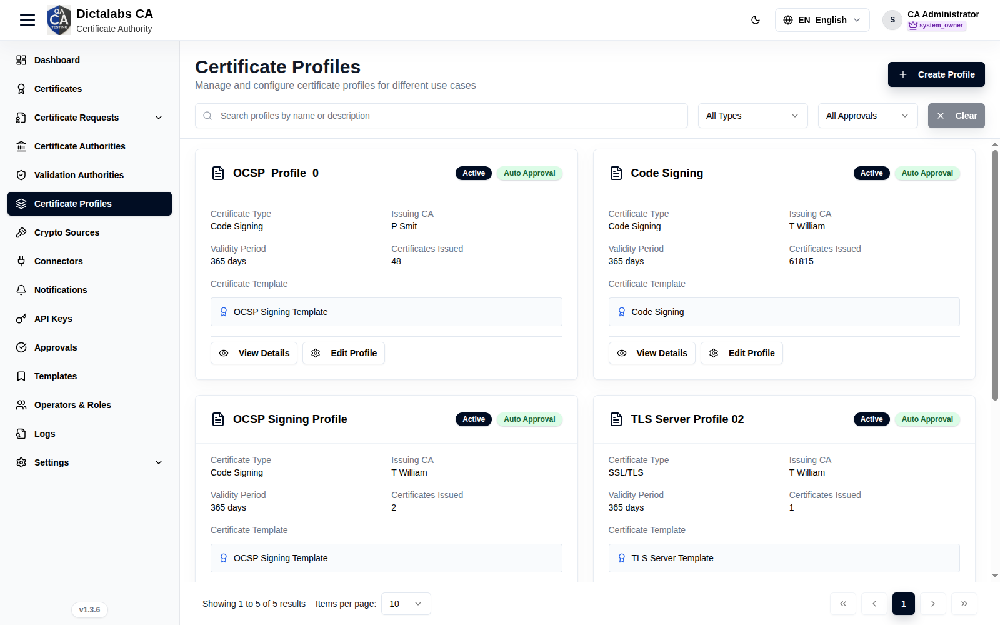
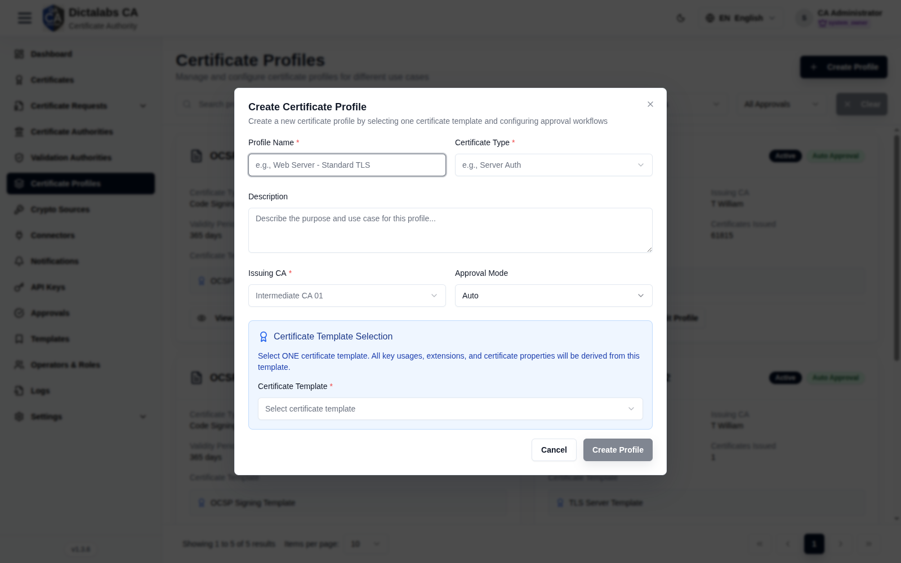

Create Certificate Profiles
Issuance. Prerequisites: a Sub CA (issuing CA) and a Template.
Purpose
A profile combines a template with an issuing CA and an approval mode. Profiles are what requesters choose when requesting a certificate; they define issuance policy.
Navigation
Certificate Profiles
Overview

- Create Profile button, search, type/approval filters.
- Card grid — name, status, approval mode, Certificate Type, Issuing CA, Validity, Certificates Issued, Template, plus View Details / Edit Profile.
Fields — Create Profile dialog

Create a new profile by choosing one certificate template and configuring its approval workflow. Fields marked required must be filled before the Create profile button enables.
| Field | What to enter | Why it matters |
|---|---|---|
| Profile name | A clear, human-readable name (e.g. "Web server - standard TLS"). Required. | This is the label requesters pick from when requesting a certificate, so make it descriptive of the use case. |
| Certificate type | Pick one of Server auth, Client auth, Code signing, or Email. Required. | A free-form classification label used for filtering and display. The actual EKU/key usages come from the linked template, not from this field. (The former SSL/TLS option was removed; use Server auth instead.) |
| Description | Optional free text describing the purpose and use case of the profile. | Helps other admins understand when this profile should be used; shown on the profile card and details. |
| Issuing CA | Select the Sub CA that will sign certificates issued from this profile. Required. | Only active intermediate CAs are listed. This binds every certificate from this profile to a specific issuer and its trust chain. |
| Approval mode | Choose Auto or Manual. | Auto issues immediately on request; Manual routes each request to Approvals for a reviewer. Governs whether issuance needs a human check. |
| Certificate template | Select one end-entity certificate template. Required. | All key usages, extended key usages, and extensions are inherited from this template. Changing the certificate type resets this selection, so pick the type first. |
- Create profile / Cancel — Create validates the required fields and saves the profile; Cancel discards it.
Fields — Edit Profile dialog
Edit reopens the same fields as Create for an existing profile, pre-filled from its current values, plus one extra control.
| Field | What to enter | Why it matters |
|---|---|---|
| Profile name | Update the display name. Required. | Same role as at creation. |
| Certificate type | Reselect from Server auth / Client auth / Code signing / Email. Required. | Reclassifies the profile for filtering/display. |
| Description | Update the free-text description. | Keeps the profile's stated purpose current. |
| Issuing CA | Reselect the intermediate issuing CA. Required. | Repoints future issuance at a different Sub CA and trust chain. |
| Approval mode | Auto or Manual. | Switches new requests between immediate issuance and routing to Approvals. |
| Status | Active or Inactive. | Inactive profiles remain configured but cannot be selected for new certificate requests — use this to retire a profile without deleting it. |
| Certificate template | Reselect one end-entity template. Required. | Re-derives all key usages and extensions from the newly chosen template. |
- Edit profile / Cancel — Edit saves changes; Cancel discards them.
Configure Profile dialog
Opened from Configure profile on a profile card. It manages the certificate template, subject and SAN override rules, the approval workflow, and issuance policies across four tabs. Save with Save configuration; Cancel discards.
Certificate template
Read-only view of the template bound to the profile and everything inherited from it. To change any of these values you must select a different template (or create a new one).
| Field | What to enter | Why it matters |
|---|---|---|
| Template name | Read-only. | Identifies which template drives this profile's certificate contents. |
| Template type | Read-only. | Confirms the template category (e.g. end-entity) in use. |
| Key usages (from template) | Read-only list. | Shows the basic key usages every issued certificate will carry, so you can verify they fit the intended use. |
| Extended key usages (from template) | Read-only list. | Shows the EKUs (e.g. server/client auth) that actually determine what the certificate is trusted for. |
| Certificate extensions (from template) | Read-only list. | Lets you confirm which X.509 extensions the template applies before issuing under this profile. |
- The tab shows a reminder that all of the above are inherited from the template and can only be changed by switching templates.
Subject & SAN
Defines default subject/SAN values and how much a requester may override them at request time, using four permission levels: Locked (no overrides), Restricted (admin approval required), Flexible (some fields user-editable), and Open (most fields user-editable).
| Field | What to enter | Why it matters |
|---|---|---|
| Default subject template | The DN to pre-fill, e.g. CN=example.com, O=Company, L=City, ST=State, C=Country. Variables such as ${user.name}, ${domain}, ${department} are supported. |
Standardizes the subject DN across issued certificates and reduces requester error. |
| Subject override policy — Permission level | Choose Locked / Restricted / Flexible / Open. | Controls whether and how requesters may change the subject DN. Tighter levels enforce naming policy; looser levels give requesters flexibility. The current policy text summarizes the selected level. |
| SAN default entries | Review the default SAN values configured for the profile (shows "No default SAN entries configured" when none). | Pre-populated SANs that will be applied unless overridden. |
| Max entries | Read-only count of the maximum SAN entries allowed. | Caps how many SAN values a certificate may include, limiting scope. |
| SAN override policy — Permission level | Choose Locked / Restricted / Flexible / Open. | Controls whether requesters may add or change SAN entries, balancing policy enforcement against convenience. |
Approval workflow
Sets how certificate requests from this profile are approved and whether the profile is active.
| Field | What to enter | Why it matters |
|---|---|---|
| Approval mode | Choose Automatic approval, Manual approval, Conditional approval, or Dual approval required. | Determines the review path: automatic issues immediately; manual and dual send requests to Approvals; dual requires a second approver. Controls the strength of the issuance control. |
| Workflow status | Set Active or Inactive. | Inactive profiles can't be used for new requests, letting you pause a profile without deleting it. |
| Auto-approval rules | Read-only list (shown when configured). | Displays the conditions under which requests are auto-approved, for transparency. |
| Manual approvers | Read-only list (shown when configured). | Shows who is authorized to approve requests routed for manual review. |
| Required approvals | Read-only count. | Indicates how many approvals a request needs before issuance. |
Policies & settings
Certificate validity, issuance controls, and cryptographic constraints for the profile.
| Field | What to enter | Why it matters |
|---|---|---|
| Validity period | Choose 90, 180, 365, 730 (2 years), or 1095 days (3 years). | Sets the lifetime of certificates issued from this profile; shorter lifetimes reduce exposure if a key is compromised. |
| Auto-renewal notification | Toggle on/off. | When on, requesters are reminded before certificates expire, reducing unplanned outages. |
| Require CSR validation | Toggle on/off. | When on, submitted CSRs are validated before issuance, preventing malformed or non-compliant requests. |
| Domain ownership verification | Toggle on/off. | When on, the requester must prove control of the domain, preventing issuance for domains they don't own. |
| CT log submission | Toggle on/off. | When on, issued certificates are submitted to Certificate Transparency logs for public auditability. |
| Max SAN entries | Enter a number (default 10). | Hard limit on SAN entries per certificate, constraining certificate scope. |
| Minimum key size | Choose 2048, 3072, or 4096 bits. | Enforces a minimum RSA key strength; higher values increase security at some performance cost. |
Step-by-Step
- Open Certificate Profiles → Create Profile.
- Enter Profile Name and Certificate Type.
- Choose Issuing CA (Sub CA), Approval Mode, and one Certificate Template.
- Click Create Profile.
Important Notes
- All key usages/extensions derive from the chosen template.
- Approval Mode = Manual sends requests to Approvals.